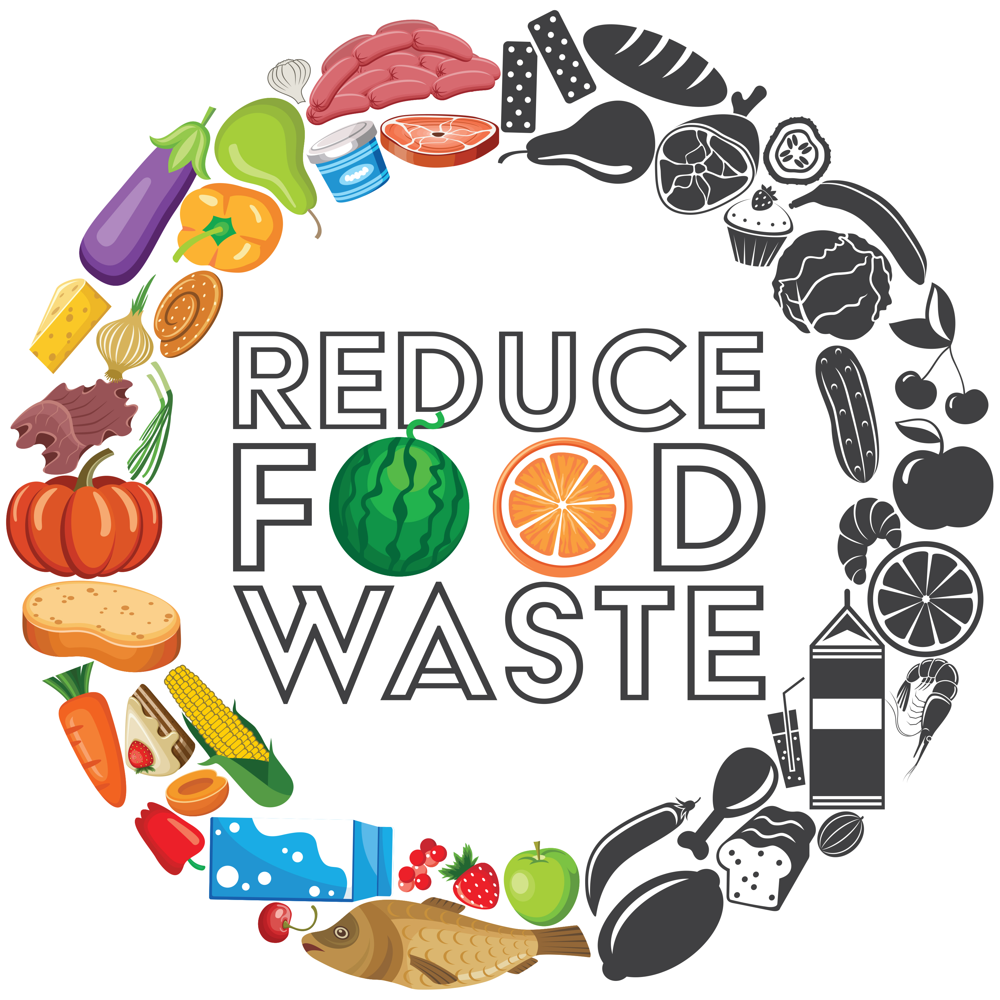

Reducing Food Waste
Food is so important to our survival. We live in a time where there is an abundance of food and a large variety of food. I love trying new foods. I look forward to meals. I love my mom's cooking.
Food is such an integral part of our lives, but sometimes a lot of it goes to waste. How often have you bought produce intending to use it, but then forget about it in the back of the refridgerator until it rots? It happens to the best of us. Or how many times are you just sick of leftovers, so you just throw them away? Or how many parties have you gone to where they got too much food, but no one wants to take the extras?
These are just a few of the ways we waste food. They may seem inconsequential, but multiply it by the number of people in the country and it adds up to be a lot. Of course, not all the waste comes from consumers, a lot comes from stores, restaurants, and farms, but you yourself can make a difference.
I hope you can learn more about food waste and how to fight it from this short webpage.
To start our journey off, here are some statistics about fruit consumption in the United States. Not really about waste, but pretty interesting. You can interact with the graph too!
Interactive Graph

Ways You Can Combat Food Waste
- Prevent Waste in Planning and Shopping
- Look in your refrigerator, freezer, and pantry first to avoid buying food you already have.
- Purchase imperfect produce or upcycled products.
- Prevent Waste in Storage
- Store grains in airtight containers and label containers with contents and the dates.
- Properly store fruits and vegetables for maximum freshness.
- Prevent Waste in Cooking and Preparation
- Produce that is past its prime, as well as odds and ends of ingredients and leftovers, may still be fine for cooking.
- Learn the difference between “sell-by,” “use-by,” “best-by,” and expiration dates.
Educational Video
Thanks for taking the time to learn about food waste. Now go make a difference!
